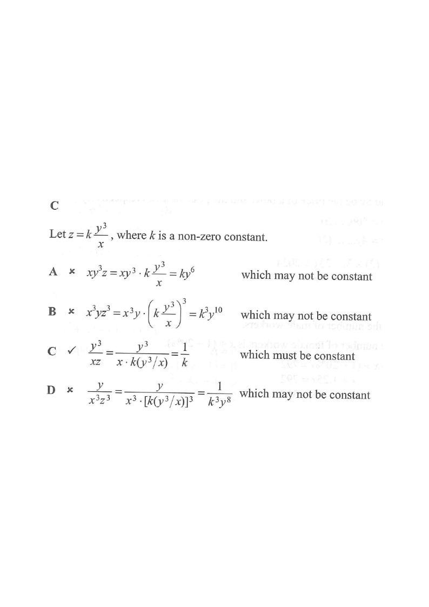

Question. If \(z\) varies inversely as \(x\) and directly as the cube of \(y\), which of the following must be constant?

“\(z\) varies inversely as \(x\)” gives a factor \(\dfrac{1}{x}\), and “directly as the cube of \(y\)” gives a factor \(y^{3}\). Combining them with the constant of variation \(k\):
\[ z = k\cdot\frac{y^{3}}{x}, \qquad k \neq 0 \]
Inverse variation \(\Rightarrow\) the variable goes to the denominator; direct variation \(\Rightarrow\) the variable goes to the numerator (with its stated power).
Multiply both sides by \(\dfrac{x}{y^{3}}\):
\[ \frac{xz}{y^{3}} = k \qquad\Longleftrightarrow\qquad \frac{y^{3}}{xz}=\frac{1}{k} \]
Since \(k\) is a fixed non-zero constant, so is \(\dfrac{1}{k}\). Hence the quantity \(\dfrac{y^{3}}{xz}\) must be constant.
A quantity is “constant” if it can be expressed purely in terms of \(k\).
\[ xy^{3}z = xy^{3}\cdot k\frac{y^{3}}{x} = k\,y^{6} \]
This still contains \(y\), so it changes when \(y\) changes — not constant.
Substituting \(z=k\dfrac{y^{3}}{x}\) is the fastest way to test each option.
\[ x^{3}yz^{3} = x^{3}y\left(k\frac{y^{3}}{x}\right)^{3} = k^{3}x^{3}y\cdot\frac{y^{9}}{x^{3}} = k^{3}y^{10} \]
Depends on \(y\) — not constant.
Remember \((k\,y^{3}/x)^{3}=k^{3}y^{9}/x^{3}\); the \(x^{3}\) cancels.
\[ \frac{y^{3}}{xz} = \frac{y^{3}}{x\cdot k\dfrac{y^{3}}{x}} = \frac{y^{3}}{k\,y^{3}} = \frac{1}{k} \]
All variables cancel — depends only on \(k\), therefore it must be constant. ✔
This is exactly the rearrangement from Step 2, confirming the choice directly.
\[ \frac{y}{x^{3}z^{3}} = \frac{y}{x^{3}\left(k\dfrac{y^{3}}{x}\right)^{3}} = \frac{y}{x^{3}\cdot k^{3}\dfrac{y^{9}}{x^{3}}} = \frac{y}{k^{3}y^{9}} = \frac{1}{k^{3}y^{8}} \]
Depends on \(y\) — not constant.
Only the expression whose variables fully cancel can be a constant.
| Option | Expression | In terms of \(k\) | Constant? |
|---|---|---|---|
| A | \(xy^{3}z\) | \(k\,y^{6}\) | ✘ |
| B | \(x^{3}yz^{3}\) | \(k^{3}y^{10}\) | ✘ |
| C | \(\dfrac{y^{3}}{xz}\) | \(\dfrac{1}{k}\) | ✔ |
| D | \(\dfrac{y}{x^{3}z^{3}}\) | \(\dfrac{1}{k^{3}y^{8}}\) | ✘ |
Only option C is free of \(x\) and \(y\) — the mark of a genuinely constant quantity.